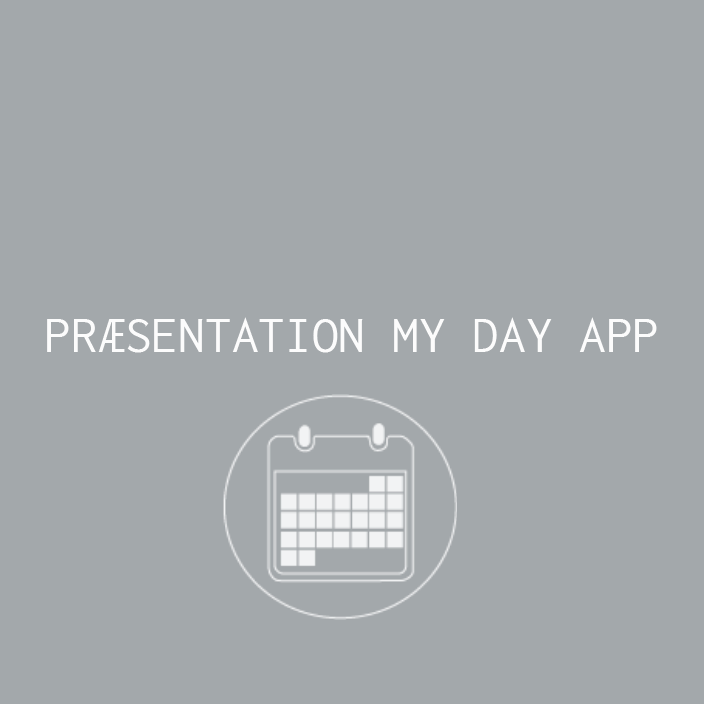
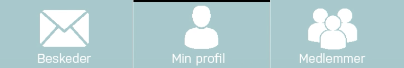
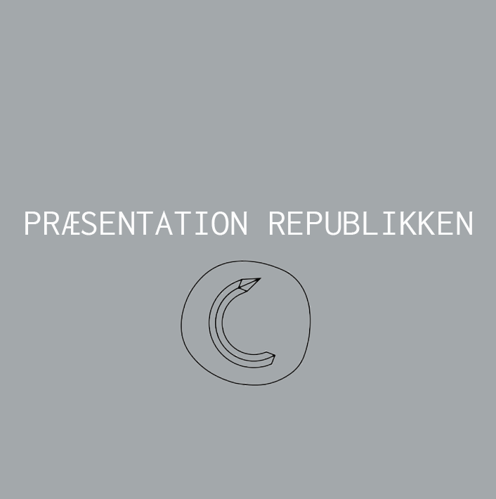

I dette tema, startede vi med opgaven ’Øvelsescasen’. Her skulle vi udvikle en prototype til en App på en smartphone, som skulle præsenteres for KEA’s ledelse. Denne App gik ud til målgruppen – de studerende på alle KEA afdelinger dvs. også os selv.
I vores gruppe startede vi med, at samle viden om problemer og mangler på KEA. Dette gjorde vi ved at interviewe en af de studerende på KEA Lygten, og ud fra vores egne erfaringer. Med den indsamlede information kom vi frem til 3 ideer, Fronter, Skema, og Forholds App. Vi lavede nu design charette, storyboard, og paper prototype, på hver ide, og kom frem til den vi ville bruge. Vi udvalgte skema App’en, da mange efterspurgte det, og da vores nuværende skema er meget uoverskueligt. Nu lavede vi hver især et udkast til en skema App, og samlede vores ideer, hvorefter vi gik med den ene, og brugte nogle elementer fra de andre ideer. Denne måde synes vi fungerede rigtig godt, og gjorde også dette i opgaven fra Republikken.
Hele processen, og udarbejdelse af App’en gik godt, da vi opnåede et resultat vi var tilfredse med. Jeg kunne personligt godt selv lide emnet, især at lave sin ide færdig i Photoshop, så man har et færdigt produkt.
Denne opgave blev stillet af virksomheden Republikken, som er et kontorfællesskab. Opgaven gik ud på, at skabe en prototype til en App, hvor Republikkens medlemmer kunne komme nemmere i kontakt med hinanden, og på denne måde få en bredere omgangskreds (i Republikken), og sparre med flere.
Problemstilling:
Efter vi havde været inde og besøge republikken, fik vores gruppe hurtigt dannet et overblik og blev enige om hvilke ting vi skulle fokusere på. Vi ville skabe en App, for Republikkens medlemmer hvor man havde en profil med:
App'en skulle være enkel og overskuelig. Samtidig havde vi arbejdet videre på ideen, så hvis det var, kunne App’en også bruges hos andre kontorfællesskaber. Jeg syntes at processen med denne App, var mere overskuelig helt fra start, da vi præcist vidste hvad vi skulle lave af tests osv.
